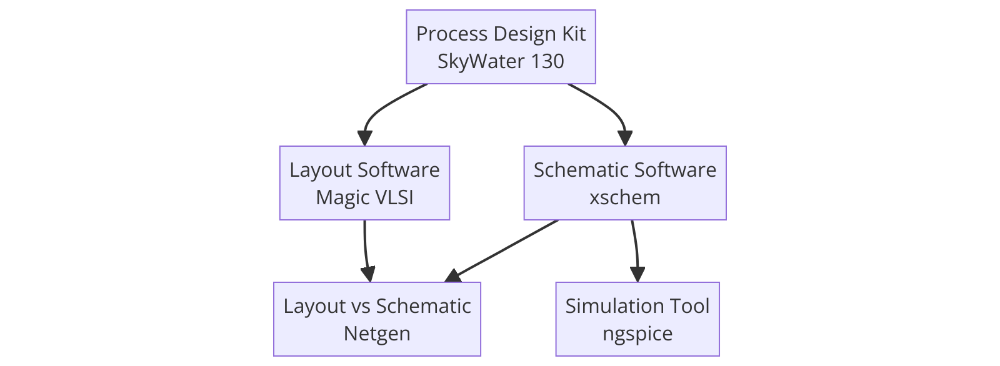

Neuromorphic Circuits in Skywater 130nm Tutorial
Part1: Software Installation
What are we installing?
Various software packages and data packages are necessary to create our own analog circuit designs. In this tutorial, we are going to explain how to install all necessary packages and provide additional knowledge for those unfamiliar with Linux installations and all the software tools needed to design analog circuits.
We are going to install 5 things in total: 2 graphical design programs (Xschem & Magic VLSI) 1 simulator program (nGspice) 1 data package (Skywater PDK 130) 1 program that cross-checks the design at the schematic and layout level (Ngnet).

Open a terminal and move to a location where you would prefer to have all your source files. You can delete them later or keep them for easier updating of your software packages. For Beginners I recommend creating a folder in your documents to shove them all, as we will download many (Somone email me if there is a better alternative) run all your git clone commands wihtin this directory
cd Documents
mkdir Source_Files
cd Soure_Files
Installing Xschem
Xschem is the schematic editor tool. To plan, draw, design and simulate your circuits.
dependencies to install the softwares
sudo apt update && sudo apt install -y flex bison libx11-dev tcl-dev tk-dev libxpm-dev m4
sudo apt update && sudo apt install -y libcario2-dev python mesa-common-dev libgl-dev libglu1-mesa-dev zlib1g-dev
Download the source files
git clone https://github.com/StefanSchippers/xschem.git xschem-src
Move into the folder, configure and install. Do each separatley to catch missing dependencies.
cd xschem-src
./configure
make
sudo make install
Important file locations to remember:
System-wide Xschem executable is in:
/usr/local/share/xschem/ (or wherever specified during install)
User configuration goes in a hidden folder in your home directory:
~/.xschem/
The main user config file is:
~/.xschem/xschemrc
HOWEVER Later we are going to copy this file into a new directory so forget about the one in home as we will have this new one to edit for skywater to work.
Installing Magic
Magic is the layout IDE tool, it should be straightforward to install.
git clone git clone git://opencircuitdesign.com/magic
cd magic
./configure
make
sudo make install
Installing Ng Spice
sudo apt install autoconf automake libtool libxaw7-dev libreadline-dev
git clone https://github.com/StefanSchippers/xschem.git xschem-src
../configure --with-x --enable-xspice --disable-debug --enable-cider --with-readline=yes --enable-openmp --enable-osdi
make
sudo make install
Installing Nnet
git clone https://github.com/StefanSchippers/xschem.git xschem-src
./configure
make
sudo make install
Installing the GAW
git clone https://github.com/StefanSchippers/xschem.git xschem-src
./configure
make
sudo make install
Installing the PDK
git clone git://opencircuitdesign.com/open_pdks
cd open_pdks
Now that you have copied the directory run each line separately
./configure --enable-sky130-pdk
make
sudo make install